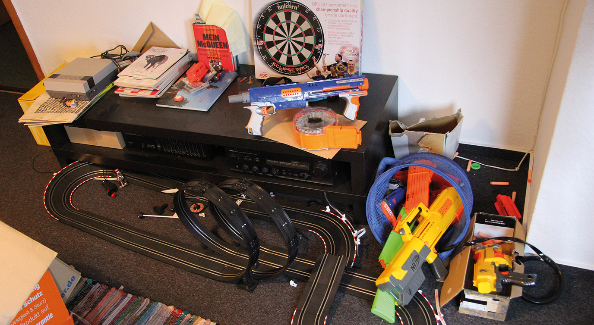

Memo an mich: Hör nicht auf zu spielen!
Rumdaddeln, Neugierde und Spaß haben uns aus Versehen zu einer erfolgreichen Agentur gemacht. Dabei wollten wir immer nur spielen und haben diese Leistungen verkauft, um danach noch mehr Spaß zu haben. Auf einmal gehe ich den ganzen Tag mit irgendwelchen Leuten irgendwelche Zahlen durch. Warum es gerade jetzt wichtig ist, wieder mehr zu spielen.

Mit nem Tretroller und ner Plastikknarre aus Versehen in Richtung Agentur gefahren
Als wir herrlich media vor fünfeinhalb Jahren gegründet haben, bestand Arbeiten zu 90% aus spielen. Wir waren mehr draußen mit Drohnen in Svens Garten, oder mit dem Fußball im Keller unterwegs als in unseren 6qm Büro am Computer. Dann haben wir den Spaß einfach auf den Computer übertragen und an lustigen Dingen programmiert, Technologien ausprobiert und ziemlich wenig direkt an oder über die Arbeit nachgedacht.
Dann sind wir in ein eigenes Büro gezogen und damit alles so bleiben konnte wie es war, haben wir uns ein Spielzimmer eingerichtet. Da steht n Beamer, Konsolen, Shisha, Schwerter, Liegewiese, Zeitschriften uvm. Während und nach der Arbeit hingen wir da rum, haben Pizza gefuttert, uns über Technologien ausgetauscht und über das nächste große Dinge gesprochen.
Am Anfang bin ich den ganzen Tag mit nem Tretroller, bis unter die Zähne mit Plastikknarren bewaffnet, zwischen Computer und Kicker gependelt und hab darüber nachgedacht, was ich noch so geiles erfinden, verbessern oder ausprobieren könnte. Unsere Ideen-Liste platzte aus allen Nähten und wir haben die ersten Mitarbeiter eingestellt. Auf einmal mussten wir n bisschen Geld verdienen, damit es die Bude länger als nur ein paar Monate gibt.
Natürlich war das oberste Gebot, Spaß zu haben und vor allem neuen Technik-Shit auszuprobieren.
Das hatte den netten Nebeneffekt, dass wir das, was wir beim Rumdaddeln und in den unzähligen Eigenentwicklungen gelernt haben, nebenbei noch verkaufen konnten und Kunden auf einmal unser Know-How zu schätzen wussten. Wir haben immer das neuste Zeug benutzt und jede Technologie direkt zum Kunden gebracht und das nur, weil wir es eh gerade irgendwo in nem Eigenprojekt eingesetzt wurde. So wurde die Nachfrage an individuellen Seiten und Shops immer größer und wir haben mehr Leute eingestellt.
Wir brauchen echtes Geld
Shit. Jetzt mussten wir jeden Monat schon echtes Geld verdienen. Ist ja aber einfach, die Nachfrage ist krass. Wir stellen erst einmal 1-2 eigene Ideen hinten an und machen n paar Kundenprojekte mehr. Zum Glück kommen bis heute die Projekte immer zu uns und so mussten wir noch nie Akquise betreiben und können uns aussuchen, für wen wir arbeiten wollen und für wen nicht. Das ist ziemlicher Luxus als Agentur, aber mir fiel langsam auf, dass ich ziemlich selten auf nem Roller auf dem Weg zum Spielzimmer bin. Eigentlich haben wir gar nicht mehr gespielt. Wir haben gearbeitet.

herrlich media Freitag.
Die Rettung?
Damit unser Traum nicht außer Kontrolle geriet und wir zu „einer dieser Agenturen“ werden, haben wir den „herrlich media Freitag“ eingeführt. Jeden Freitag kann jeder Mitarbeiter an einem Projekte seiner Wahl arbeiten. Technologien ausprobieren und einfach wieder spielen.
Das war 5-6 Wochen absolut geil. Dann jagt eine Deadline die nächste und zack, arbeiten alle wieder durch. Mittagspausen wurden wieder kürzer, Freitage wurden duchgeknüppelt und meine Tage bestehen bis heute zu viel zu großen Teilen daraus, Angebote zu schreiben, Rechnungen zu kontrollieren und irgendeinen Schrott zu administrieren.
In dem Stress fängt man dann an best practises zu verwenden und einfach das Funktionierende bei einem neuen Projekte einzusetzen, anstatt wie früher die Entwicklungen zu beobachten ob es nicht längst heißere Ansätze gibt. So funktioniert herrlich media nun seit einigen Monaten. Extrem effektiv, gewinnbringend und erfolgreich. Ist das nicht aber genau der Punkt an dem man wieder spielen sollte, mal einen Job sausen lässt um etwas zu wagen und neu zu lernen? Sich fortzubilden und so all den anderen, die zu einem solchen Punkt einfach 5-6 Leute mehr einstellen würden um die Welle zu surfen bis sie am Strand versiegt, weiter davon zu fahren?
Jepp, bin ich mir ziemlich sicher.
Also ab ins Spielzimmer. Solltest du dich vielleicht auch mal wieder zu zwingen. Ich will nicht derjenige sein, auf den irgendwann in Frameset-Manier mit dem Finger gezeigt wird, weil er noch mit jQuery arbeitet :)
Fynn